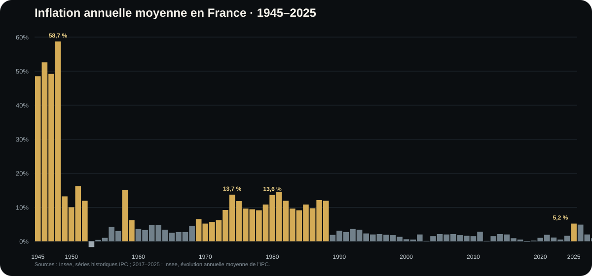
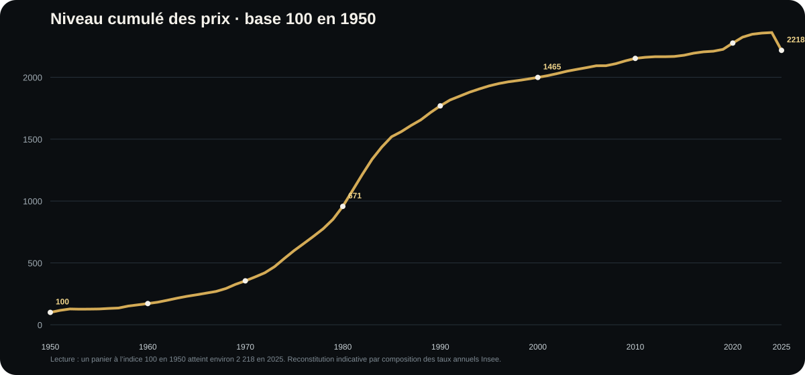

En bref
- L’inflation est une hausse générale et durable des prix, donc une perte de pouvoir d’achat de la monnaie.
- Une baisse de l’inflation ne signifie pas une baisse des prix : c’est de la désinflation.
- La France a connu plusieurs régimes radicalement différents : après-guerre, années 1970-1980, grande désinflation, puis longue période d’inflation faible.
- Entre 2020 et 2025, le niveau général des prix a augmenté d’environ 16 % en cumul, malgré le retour de l’inflation sous 1 % en moyenne en 2025.
- Le bon réflexe n’est pas seulement de demander « combien rapporte mon argent ? », mais combien rapporte-t-il après inflation ?
1. Qu’est-ce que l’inflation ?
L’Insee définit l’inflation comme une perte du pouvoir d’achat de la monnaie se traduisant par une hausse générale et durable des prix. La hausse d’un seul produit ne suffit donc pas. Une flambée temporaire du prix des tomates ou du pétrole peut contribuer à l’inflation, mais l’inflation décrit un mouvement suffisamment large pour affecter le niveau général des prix.
Le renversement utile
100 € restent 100 € sur votre compte. Ce qui change, c’est ce que ces 100 € permettent d’acheter. L’inflation est donc autant une histoire de valeur de la monnaie qu’une histoire de prix.
2. Comment mesure-t-on l’inflation ?
En France, l’Indice des prix à la consommation — l’IPC — suit l’évolution moyenne des prix d’un panier représentatif de consommation : alimentation, énergie, logement, transports, vêtements, services, loisirs, communications, etc. Chaque catégorie est pondérée selon sa place dans la consommation des ménages.
Une hausse de 20 % sur un produit très marginal n’a donc pas le même poids qu’une hausse de 10 % sur une dépense supportée par presque tout le monde.
Au niveau européen, Eurostat utilise l’IPCH, indice harmonisé permettant de comparer les pays et utilisé par la Banque centrale européenne dans son analyse de la stabilité des prix.
3. Pourquoi votre inflation peut être différente de l’inflation officielle
L’IPC est une moyenne. Personne ne consomme exactement le panier moyen.
| Ménage A | Ménage B |
|---|---|
| Voiture tous les jours | Télétravail |
| Logement énergivore | Logement bien isolé |
| Forte part du budget en alimentation | Forte part en services numériques |
| Très sensible à l’énergie | Peu sensible à l’énergie |
Si l’énergie et l’alimentation flambent, le ménage A peut subir une hausse de dépenses très supérieure au chiffre national. C’est ce qui explique qu’une inflation officielle de 5 % puisse être ressentie comme 8 ou 10 % par certains foyers et beaucoup moins par d’autres.
4. D’où vient l’inflation ?
Inflation par la demande
Lorsque la demande augmente plus vite que la capacité de production, les entreprises peuvent augmenter leurs prix. L’économie « chauffe » : trop d’acheteurs se disputent une offre qui ne suit pas assez vite.
Inflation par les coûts
Énergie, matières premières, transport, salaires, composants ou loyers professionnels deviennent plus chers. Une entreprise peut absorber le choc en réduisant sa marge ou le répercuter sur ses clients.
Inflation importée
Une hausse du pétrole, du gaz ou de biens importés se transmet à l’économie domestique. Une monnaie qui se déprécie peut également renchérir les importations facturées dans une autre devise.
Chocs d’offre
Guerre, pandémie, catastrophe naturelle, mauvaise récolte ou rupture logistique peuvent réduire brutalement l’offre disponible.
Anticipations
Lorsque salariés, fournisseurs et entreprises commencent tous à intégrer une inflation élevée dans leurs décisions, le phénomène peut devenir plus persistant. Les salaires et les prix ne se déterminent plus seulement à partir d’aujourd’hui, mais aussi à partir de ce que chacun pense que les autres feront demain.
5. Pourquoi la BCE vise 2 % plutôt que 0 %
La Banque centrale européenne vise une inflation de 2 % à moyen terme. Une inflation légèrement positive offre une marge de sécurité contre la déflation et facilite certains ajustements de prix et de salaires. L’objectif n’est donc pas que chaque prix reste immobile.
La déflation — baisse générale et durable des prix — peut elle-même devenir dangereuse : achats reportés, baisse de la demande, diminution des investissements et poids réel plus lourd des dettes.
6. Désinflation n’est pas baisse des prix
Exemple
Un panier coûte 100 €. Après une période inflationniste, il atteint 115 €. L’année suivante, l’inflation retombe à 2 %. Le panier ne revient pas à 100 € : il passe approximativement à 117,30 €. L’inflation baisse, mais les prix continuent de monter.
C’est la distinction entre désinflation — ralentissement de la hausse — et déflation — baisse générale des prix.
7. 80 ans d’inflation française en un graphique

8. 1945-1949 : l’après-guerre hors norme
Les ordres de grandeur sont difficiles à imaginer aujourd’hui : environ +48,5 % en 1945, +52,6 % en 1946, +49,2 % en 1947 et +58,7 % en 1948 dans la série historique de l’Insee. Reconstruction, pénuries, rationnement et désorganisation de l’appareil productif créent un environnement radicalement différent de l’économie actuelle.
Une inflation de 5 % est pénible. Elle n’appartient néanmoins pas au même univers économique qu’une hausse des prix de 50 % sur une seule année.
9. Les années 1950 et 1960 : normalisation progressive
Les années 1950 restent instables : inflation à deux chiffres au début de la décennie, bref passage en territoire négatif, puis nouvelle poussée autour de 15 % en 1958. Les années 1960 deviennent plus calmes, le plus souvent entre environ 2,5 % et 5 %, avant une remontée à la fin de la décennie.
Une inflation annuelle modérée peut pourtant produire un effet considérable lorsqu’elle se répète. C’est la même mécanique que les intérêts composés, mais appliquée aux prix.
10. Les années 1970 : le grand régime inflationniste
La France entre alors dans la période qui sert encore aujourd’hui de comparaison de référence :
Le premier choc pétrolier joue un rôle majeur. Mais le vrai problème n’est pas seulement le pic : l’inflation s’installe. Les coûts, les salaires et les anticipations commencent à se répondre pendant plusieurs années.
Pourquoi la comparaison avec 2022 doit être prudente
Une inflation à 5 % pendant deux ans et une inflation proche de 10 % pendant une décennie ne produisent pas la même économie. La persistance compte autant que le niveau.
11. 1980-1985 : encore plus de 10 %
La nouvelle décennie commence avec +13,6 % en 1980, +13,4 % en 1981 et +11,8 % en 1982. L’inflation ralentit ensuite : 9,6 % en 1983, 7,4 % en 1984, 5,8 % en 1985 puis autour de 3 % à partir de 1986-1988.
C’est la grande désinflation : le régime économique change progressivement.
12. Les années 1990 : une autre économie
L’inflation passe de 3,4 % en 1990 à environ 0,5 % en 1999. Sur l’ensemble de la décennie, la hausse cumulée des prix n’est plus que d’environ 21 % selon la série historique utilisée.
Comparaison d’ordre de grandeur :
| Période | Hausse cumulée approximative des prix |
|---|---|
| 1950-1959 | +87 % |
| 1960-1969 | +46 % |
| 1970-1979 | +138 % |
| 1980-1989 | +102 % |
| 1990-1999 | +21 % |
| 2000-2009 | +19 % |
| 2010-2019 | +12 % |
| 2020-2025 | +16 % |
Sur 80 ans, les définitions, champs et bases de l’IPC ont évolué. Ces cumuls servent donc à comparer les régimes et les ordres de grandeur, pas à reconstruire au centime près le prix d’un panier identique depuis 1950.
13. 2000-2019 : deux décennies d’inflation basse
Dans les années 2000, l’inflation française tourne généralement autour de 1,5 à 2 %. En 2009, elle tombe à environ 0,1 %. La décennie 2010 va encore plus loin : 0,5 % en 2014, 0 % en 2015, 0,2 % en 2016.
Une génération d’emprunteurs, d’épargnants, d’entreprises et d’investisseurs finit par considérer l’inflation faible et les taux bas comme presque naturels. C’est précisément ce qui rend le choc suivant si déstabilisant.
14. 2020-2025 : le retour brutal
Après +0,5 % en 2020 et +1,6 % en 2021, l’inflation moyenne annuelle atteint +5,2 % en 2022 puis +4,9 % en 2023. Elle ralentit ensuite à +2,0 % en 2024 et +0,9 % en 2025 selon l’Insee.
La réouverture post-Covid combine rebond de la demande, chaînes logistiques perturbées, hausse du fret, tensions sur les matières premières et énergie chère. La guerre en Ukraine amplifie ensuite le choc énergétique et alimentaire.
Le retour à 0,9 % en 2025 ne remet pas les prix à leur niveau de 2020. En composant les variations annuelles, le niveau général des prix augmente d’environ 16 % entre 2020 et 2025.
15. Le graphique que le taux annuel ne montre pas

Ce graphique permet de comprendre pourquoi « l’inflation est revenue à 1 % » ne signifie pas « les prix sont revenus comme avant ».
16. 10 000 € immobiles : ce que l’inflation fait sans toucher au solde
| Inflation moyenne pendant 10 ans | Pouvoir d’achat final de 10 000 € non rémunérés | Perte réelle approximative |
|---|---|---|
| 2 % | 8 203 € | -18 % |
| 3 % | 7 441 € | -26 % |
| 5 % | 6 139 € | -39 % |
La moins-value n’apparaît nulle part sur le relevé. C’est ce qui rend le risque inflationniste si discret.
17. Même 2 % finissent par peser lourd
À 2 % d’inflation annuelle constante, un bien valant 100 € aujourd’hui coûterait approximativement :
- 122 € après 10 ans ;
- 149 € après 20 ans ;
- 181 € après 30 ans.
Inversement, 100 000 € conservés trente ans sans rendement ne représenteraient plus qu’environ 55 000 € de pouvoir d’achat actuel.
18. Rendement nominal et rendement réel
Un placement peut afficher un gain tout en réduisant votre pouvoir d’achat.
Exemple
10 000 € placés pendant dix ans à 3 % par an augmentent nominalement. Mais si l’inflation est de 5 % chaque année, leur valeur réelle finale est inférieure à la valeur de départ. Le rendement positif sur le relevé ne suffit donc pas.
La formule approximative à retenir est :
Rendement réel ≈ rendement nominal − inflation
Pour un calcul précis, il faut raisonner en rapport de facteurs, mais cette approximation suffit pour comprendre l’ordre de grandeur lorsque les taux sont modérés.
19. Pourquoi le cash est exposé sans sembler risqué
Le cash est indispensable pour les dépenses proches, l’épargne de précaution et la flexibilité. Mais une grosse somme conservée pendant des années sans rendement réel positif est exposée à une perte de pouvoir d’achat.
La bonne question n’est donc pas « faut-il du cash ? » mais : quelle somme doit rester liquide, pour quelle fonction et pendant combien de temps ?
20. L’inflation avantage-t-elle les emprunteurs ?
Parfois. Une dette à taux fixe est exprimée en euros nominaux. Si les prix et les revenus augmentent tandis que la mensualité reste fixe, le poids relatif de la dette peut diminuer.
Mais l’inflation ne fait pas disparaître la dette. Si les prix montent et que le salaire ne suit pas, les autres dépenses absorbent davantage de revenu et la mensualité peut au contraire devenir plus difficile à supporter.
21. Pourquoi les banques centrales augmentent les taux
Des taux plus élevés rendent le crédit plus cher. Immobilier, consommation et investissements des entreprises ralentissent. L’épargne devient relativement plus attractive. La demande se calme, ce qui réduit progressivement la capacité des entreprises à relever leurs prix.
Le défi consiste à ralentir suffisamment l’économie pour casser la dynamique inflationniste sans provoquer un ralentissement inutilement violent.
22. Inflation et entreprises : la question du pricing power
Deux entreprises peuvent subir la même hausse des coûts mais connaître des résultats opposés. Celle qui ne peut pas augmenter ses prix voit sa marge se contracter. Celle qui vend un produit difficile à remplacer, dispose d’une marque forte ou d’une position dominante peut mieux répercuter les coûts.
Pour un investisseur, l’inflation pose donc une question très concrète : qui peut transmettre la hausse de ses coûts à ses clients sans casser sa demande ?
23. Inflation et placements : pas de recette automatique
Actions, immobilier, obligations indexées, or ou matières premières ne constituent pas une protection parfaite dans tous les scénarios. Leur comportement dépend de la cause de l’inflation, des taux d’intérêt, de la croissance, de l’endettement et surtout du prix payé au départ.
Une entreprise de qualité achetée trop cher peut souffrir fortement lorsque les taux montent. Un actif réel acheté avec trop de dette peut devenir vulnérable. Une obligation nominale longue peut perdre de la valeur lorsque les taux remontent. Il faut donc raisonner en régime économique, pas en slogan.
24. Le scénario le plus difficile : la stagflation
La stagflation combine inflation élevée et croissance faible. Pour réduire l’inflation, les autorités doivent généralement freiner la demande ; mais lorsque l’économie est déjà stagnante, ce remède peut aggraver le chômage et la faiblesse de l’activité.
C’est l’un des environnements les plus difficiles pour les ménages, les entreprises et les banques centrales.
25. Qui souffre le plus de l’inflation ?
| Situation | Pourquoi elle est vulnérable |
|---|---|
| Cash non rémunéré | Le montant reste stable mais le pouvoir d’achat diminue |
| Salaire progressant moins vite que les prix | Le revenu réel baisse |
| Revenu fixe mal indexé | Chaque euro finance moins de dépenses |
| Entreprise sans pricing power | Les coûts montent plus vite que les prix de vente |
| Actifs très sensibles aux taux | La remontée des taux peut réduire les valorisations |
26. Les trois questions à poser face à une poussée d’inflation
- D’où vient-elle ? Demande, énergie, salaires, pénuries, change, géopolitique ?
- Se diffuse-t-elle ? Un choc sur l’énergie n’est pas identique à une hausse généralisée des services et des salaires.
- Est-elle temporaire ou persistante ? C’est la question qui distingue un choc inflationniste d’un véritable changement de régime.
Ce que j’en retiens
Je ne regarderais jamais l’inflation comme un chiffre isolé publié chaque mois. Je regarderais son origine, sa diffusion et sa durée. Pour mon argent, je raisonnerais systématiquement en rendement réel : conserver 10 000 € n’est pas conserver le pouvoir d’achat de 10 000 €. Et pour investir, je chercherais moins un prétendu « actif anti-inflation » qu’un ensemble d’actifs capables de traverser plusieurs régimes économiques.
Sources
- Insee — Une inflation modérée depuis le passage à l’euro : série historique de l’inflation, notamment 1945-2016.
- Insee — L’essentiel sur l’inflation : évolution annuelle moyenne récente de l’IPC, jusqu’en 2025.
- Insee — En 2025, nouveau ralentissement des prix à la consommation en moyenne annuelle.
- Banque centrale européenne — objectif de stabilité des prix.
- Eurostat — Indices des prix à la consommation harmonisés.